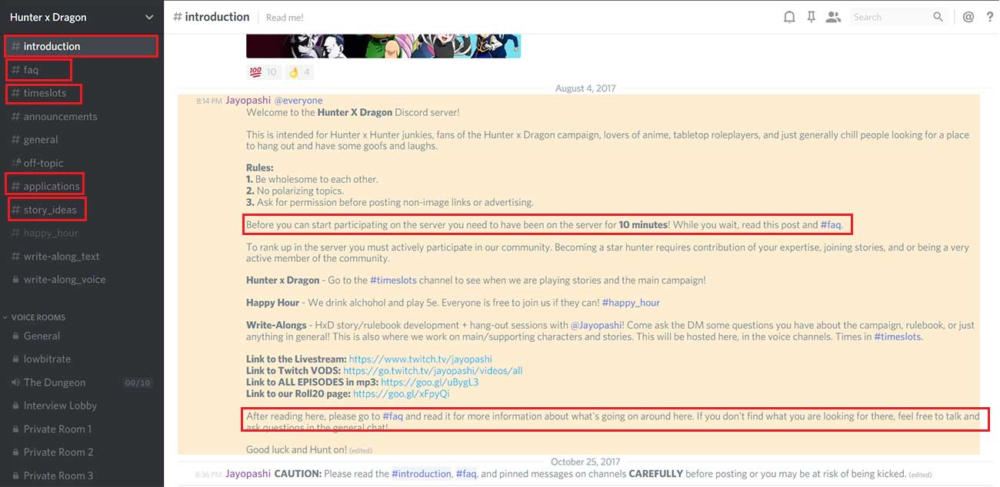
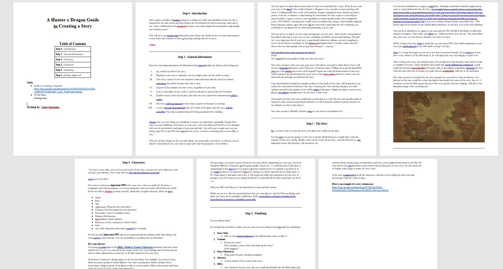
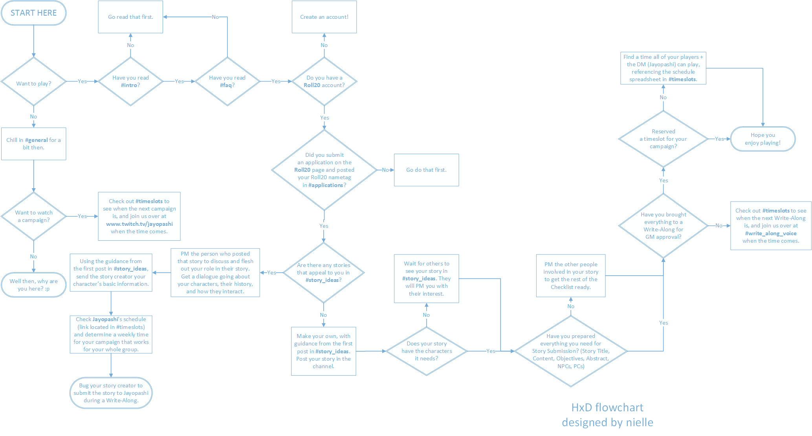

Overview
Shortly after joining an online gaming community (called Hunter x Dragon), I observed that new users were experiencing issues. They were confused by onboarding instructions and required tasks, which were spread out amongst a glut of different technologies:
- Rules and announcements were housed on Discord (a voice/text chat appliciation).
- Onboarding instructions were split haphazardly between an Introduction section and an FAQ section.
- Story creation and character creation guides were written on Google Docs.
- Available timeslots for games were listed out on Google Sheets.
- Initial applications were submitted on an external website (roll20.net) before being confirmed on yet another
Discord channel.
- Story brainstorming occurred in a Discord voice channel.
- Game participants used a Discord voice channel, while audience members watched via a Twitch stream
- Past game sessions were recorded and posted on Twitch (video) or Google Drive (audio only). New users were
recommended to watch past game sessions or spectate ongoing sessions before applying.


Overwhelmed with information, new users' workaround was to reach out to more experienced players to ask what
their next steps should be. I saw this workaround - a symptom of a system issue - as an opportunity for process
improvement.
Objective:
Modify the onboarding process or make onboarding instructions easier to understand, reducing new users' reliance on experienced users.
Research
What I wanted to explore:
- What were the most confusing aspects for new users
- What actions users were required to follow
- Experienced users' thoughts on the onboarding process
- What information was truly necessary to start a new game
User interview insights
Behaviors:
- Some new users would skim the Intro and FAQ and go straight to an experienced user to ask how to create a character.
- New users occasionally admitted that they had no idea what to do even after reading through the instructions
in Intro and FAQ.
- Experienced users would guide new users though the process and encourage them to attend a Write-Along in voice
chat.
- Some new users would not follow requested procedures for finding and joining a game, instead soliciting answers
in the general chat.
Frustrations:
- Users were overwhelmed with the wealth of information. While many wanted to get started with the process immediately,
some steps required external assistance, impeding their momentum.
- New users weren't sure what actionable tasks were necessary for character/story creation.
- Some users and the admin felt that newcomers were not clearly reading and following the instructions laid out,
wasting everyone's time.
- While experienced users often didn't mind helping out newcomers understand and adapt to the system, they also
felt the process was too time-consuming to be sustainable long-term and could hinder user growth.
Organization needs/requirements
- Admin acknowledged that the system was complex, but deemed each process necessary to ensure rich world-building.
Solution
I consulted with the administrator to develop a thorough list of user processes, for a better understanding of the character and story approval process. From there, I created a flowchart using Microsoft
Visio to provide a visual illustration of the onboarding process for new users.
Design
Sketching process
I began by writing out all of the necessary onboarding tasks and determining any prerequisites for these tasks.
From individual tasks (such as account creation) to tasks requiring external assistance (waiting for others'
interest in a story), all components were written out.
Developing the flowchart
I created the flowchart with Microsoft Visio. The visual nature of the flowchart made it easy for new users to understand what steps to take after joining.

Validation
Experienced users were the first to provide feedback on the flowchart. It was a unanimous success. The group appreciated
that the visual guide condensed the blocks of information available on the Intro and FAQ screens and made it
easier for new users to follow and understand.
Results:
This flowchart allowed for better understanding of the material and onboarding process, decreased new users' reliance on experienced users for guidance, empowered new users to be self-sufficient, and pushed for more transparency between the administrator and user base.
Project Details
Context
Side project for gaming community on Discord
Date
November 2017
Timeframe
2 weeks
Tools
Microsoft Visio
Methods & Skills
User interviews, stakeholder interviews
Role
Sole UX Designer
Deliverables
Flowchart to be distributed to users
{kind=link}